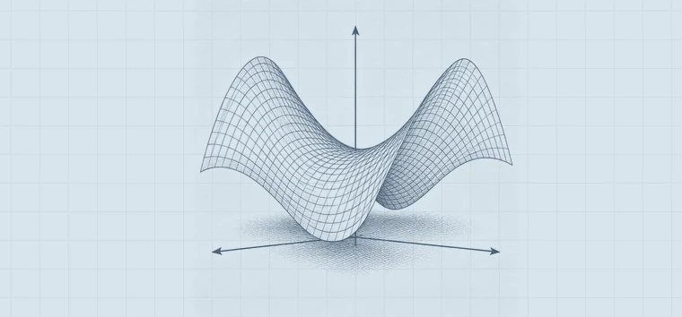

International &
quantitative finance.
Understand how money moves across companies, banks and borders, from your first balance sheet to pricing a derivative.
How does a company go public?
Follow the listing decision through underwriting, the offer price, first-day trading and the next capital raise.
Price an IPOReconstruct Google’s IPOWhat does each subject cover?
Trace topics in public university syllabi and professional references to lessons, worked cases and exam practice.
Explore the subject comparisonsExplain a theory
Trace the assumptions, reconstruct the formula, and practise the interview follow-up.
Why companies mergeDerive Black–ScholesTake a mock interviewWork a case from start to finish
Take the analyst’s seat, calculate the decision, and compare your finished document.
Build an acquisition bidWrite a credit decisionFeatured subjects
Mergers and Acquisitions
What is a business worth to its buyer, and who keeps the gains when two firms combine?
Lending and Credit Analysis
Decide how much a business can borrow, what it can repay, and which risks a lender takes.

Q01Mathematical Methods for Quantitative Finance
Use vectors, calculus and optimization to explain prices and build portfolios.
Browse by area
Foundations
Accounting, economics, mathematics, statistics and computing.
5 subjectsCore finance
Currencies, companies, banks and capital markets.
9 subjectsAdvanced finance
Lending, acquisitions, restructuring, trading and investment.
12 subjectsQuantitative finance
Mathematical methods, empirical research and computational pricing.
5 subjectsPractice room
Work a merger case, test a loan decision or price an option one step at a time.